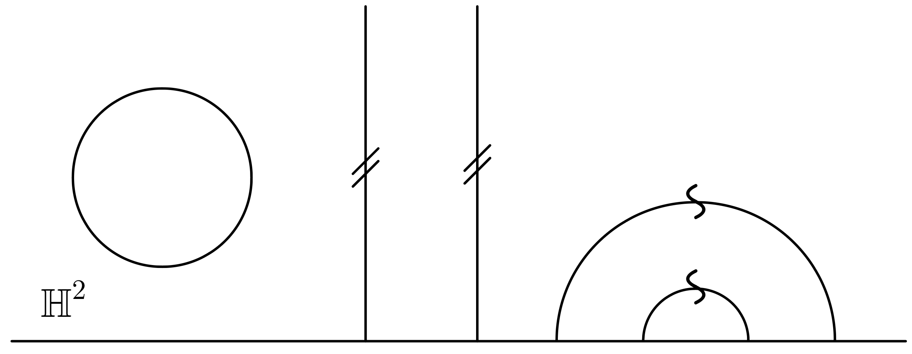

Embedding Rotationally Symmetric Surfaces Isometrically in 3D

Each admits an $S^1$ action by isometries.
We call such a surface rotationally symmetric.
The pseudosphere
- Surface of revolution of the tractrix — has constant $K = -1$
- $\{y \geq 1\}/\mathbb{Z} \subset \mathbb{H}^2$ embeds isometrically into $\mathbb{R}^3$ (Beltrami, 1868)
- The full $\mathbb{H}^2/\mathbb{Z}$ is complete — does not embed in $\mathbb{R}^3$ (Hilbert, 1901)
TODO: add image of Paris Est artwork
Can we embed more?
- Can we embed a larger piece of $\mathbb{H}^2/\mathbb{Z}$ if we drop rotational symmetry?
- How would we find such an embedding?
- TODO: add paper model of beltrami's ruffled pseudosphere
Eugenio Beltrami, Pseudosphere models, 1869–1872; Department of Mathematics-Pavia
An embedding $\Phi \colon \Sigma \to A$ is isometric if
$$\Phi^* g_A = g$$
where $g$ is the metric on $\Sigma$ and $g_A$ is the metric on the ambient space $A$.
Bad news: generally this is a coupled system of PDEs.
A way out: discretize and optimize
What if we keep the rotational symmetry...
...and change the ambient 3-space instead?
Cylindrical coordinates
Choose a geodesic $\gamma$ with an $S^1$ action by isometries. Define coordinates:
$$\Phi(u, \theta) = \bigl(h(u),\; r(u),\; \theta\bigr)$$
- $h(u)$: position along $\gamma$
- $r(u)$: distance orthogonal to $\gamma$
- $\theta$: position on the circle
Ambient metric
Assume $\partial_h, \partial_r \perp \partial_\theta$. Then:
$$g_A = dr^2 + e(r)\, dh^2 + C(r)\, d\theta^2$$
- $C(r)$: circumference of $S^1$ orbits at distance $r$ from $\gamma$
- $e(r)$: how distances along $\gamma$ stretch with $r$
Pullback
$$\Phi^* g_A = \bigl(r'^2 + e(r)\, h'^2\bigr)\, du^2 + C(r)\, d\theta^2$$
Pullback
$$\Phi^* g_A = \bigl(r'^2 + e(r)\, h'^2\bigr)\, du^2 + C(r)\, d\theta^2$$
Set $\Phi^* g_A = g = \alpha(u)^2\, du^2 + \beta(u)^2\, d\theta^2$:
Pullback
$$\Phi^* g_A = \bigl(r'^2 + e(r)\, h'^2\bigr)\, du^2 + C(r)\, d\theta^2$$
Set $\Phi^* g_A = g = \alpha(u)^2\, du^2 + \beta(u)^2\, d\theta^2$:
$$\begin{cases} h'(u) = \displaystyle\sqrt{\frac{\alpha(u)^2 - r'(u)^2}{e(r(u))}} \\[1em] r(u) = C^{-1}\bigl(\beta(u)\bigr) \end{cases}$$
Space forms
| Ambient space | $e(r)$ | $C(r)$ |
|---|
| $\mathbb{E}^3$ | $1$ | $r^2$ |
| $\mathbb{H}^3_\kappa$ ($K = -\kappa^2$) | $\cosh^2(\kappa r)$ | $\tfrac{1}{\kappa^2}\sinh^2(\kappa r)$ |
| $\mathbb{S}^3_\kappa$ ($K = +\kappa^2$) | $\cos^2(\kappa r)$ | $\tfrac{1}{\kappa^2}\sin^2(\kappa r)$ |
Embedding condition
The pseudosphere embeds as long as
$$\alpha(u)^2 - r'(u)^2 \geq 0$$
$\mathbb{E}^3$: embeds for $u \geq 0$ ($y \geq 1$) — recovers Beltrami.
$\mathbb{H}^3_\kappa$: embeds further as $\kappa$ grows.
$\mathbb{S}^3_\kappa$: embeds less.
Appendix: Beltrami and the pseudosphere
- Beltrami (1868): recognized the pseudosphere as an isometric model of $\{y \geq 1\}/\mathbb{Z} \subset \mathbb{H}^2$
- Also constructed paper models extending past the singular circle — no longer a surface of revolution, the surface must "ruffle"
- Hilbert (1901): no complete $C^2$ isometric embedding of any surface of constant $K = -1$ into $\mathbb{R}^3$ — in particular $\mathbb{H}^2/\mathbb{Z}$ does not embed; the pseudosphere is optimal
Appendix: The tractrix
- Physical picture: drag a weight along a table on a string of length $a$, walking along a straight line — the weight traces the tractrix
- Geometric property: the tangent segment from the curve to the asymptote has constant length $a$
- Parametrically: $x(t) = t - \tanh t$, $\quad y(t) = \operatorname{sech} t$
- Cusp at $(0, 1)$; asymptotes to the $x$-axis
- Rotating around the asymptote gives the pseudosphere with $K = -1/a^2$
- The cusp traces the singular circle of the pseudosphere, corresponding to $\{y = 1\}$ in the UHP